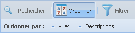

La barre d'outils des vues
Fonction « Classer
» les vues

La fonction « Classer
», comme son nom l'indique, permet de classer les
résultats de la grille «
Principale » de façon ascendante ou
descendante par le nom des « Vues
» ou par les «
Descriptions » de vues.
Ordonner une vue : ascendante ou descendante
- Cliquez sur le bouton « Classer » de la barre d'outils; Les
options disponibles du sous–menu classer apparaitront dans
bas la barre d'outils;
- Cliquez sur le bouton « Vues » du sous–menu pour
changer l'ordre (ascendante/descendante) des résultats selon
le nom de la vue; OU
- Cliquez sur le bouton « Descriptions » du sous–menu
pour changer l'ordre (ascendante/descendante) des
résultats selon la description de la vue.
Note : La petite
flèche bleue à gauche du bouton indique l'ordre
actif. Les résultats affichés sur la grille « Principale » seront
actualisés automatiquement.